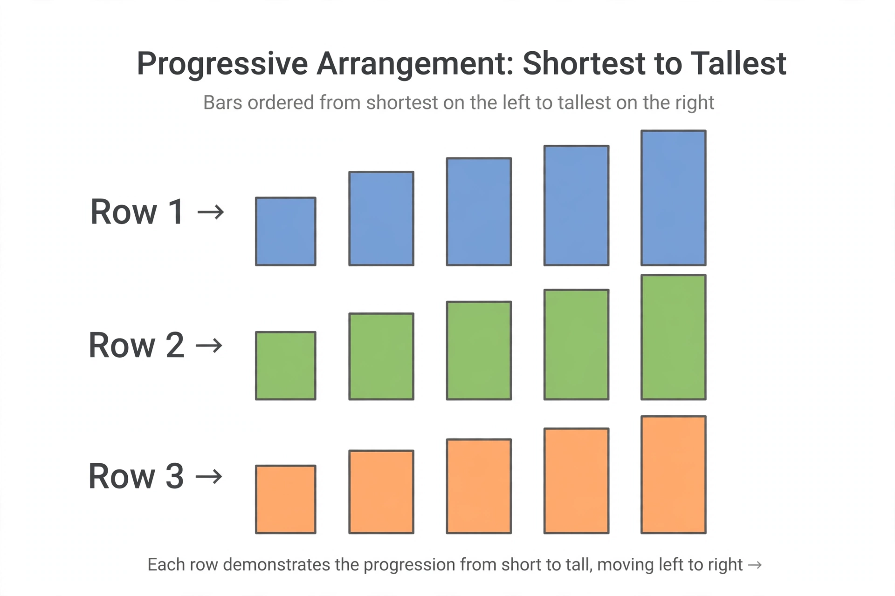

Sorting algorithm

[Image: Rows of bars being arranged from shortest to tallest across several steps]
A sorting algorithm puts the elements of a list into a specified order, usually numerical or alphabetical. Sorting is among the most fundamental operations in computing: sorted data can be searched by binary search, merged, deduplicated and displayed, and a large fraction of all computing time has historically been spent sorting.
Algorithms are compared by time complexity (best, average, worst), memory use, and stability — whether equal elements keep their original relative order. No comparison-based sort can beat O(n log n) average time, a limit proved by counting the information each comparison can supply.
The classics
Donald Knuth's The Art of Computer Programming devotes a famous volume largely to sorting and searching. Quicksort (Tony Hoare, 1959) is fast in practice but quadratic in the worst case; mergesort and heapsort guarantee O(n log n); simple methods like insertion sort win on tiny or nearly sorted inputs.
Modern libraries use hybrids — such as Timsort, which powers sorts in Python and Java — that adapt to patterns already present in the data.